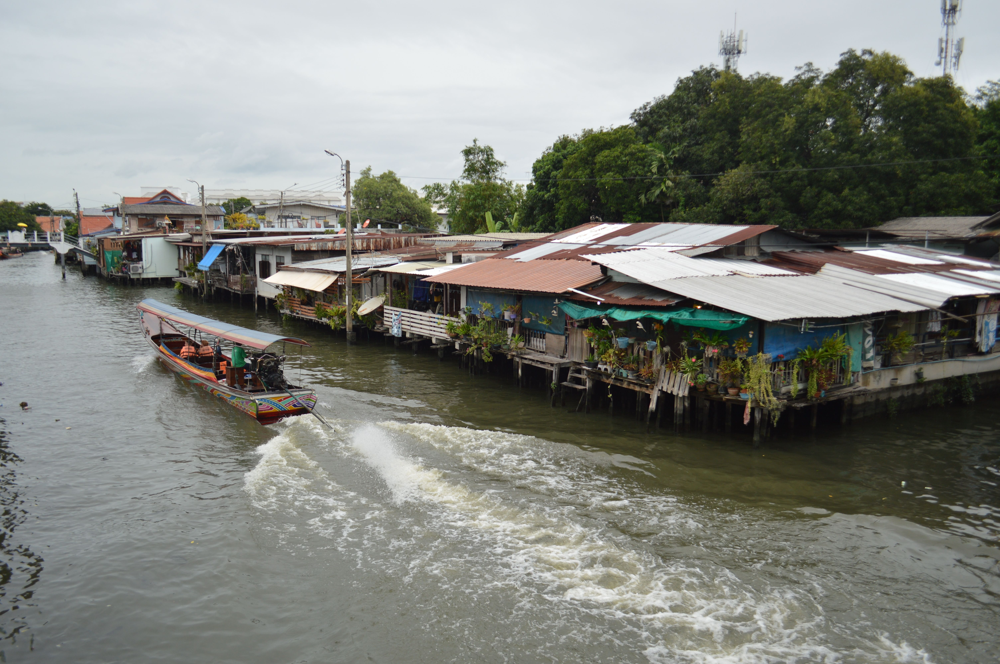
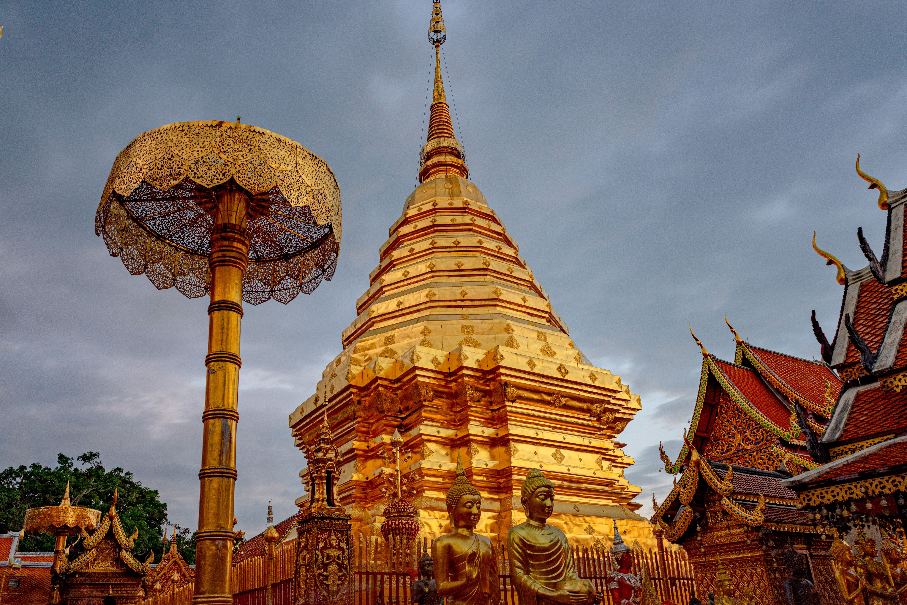
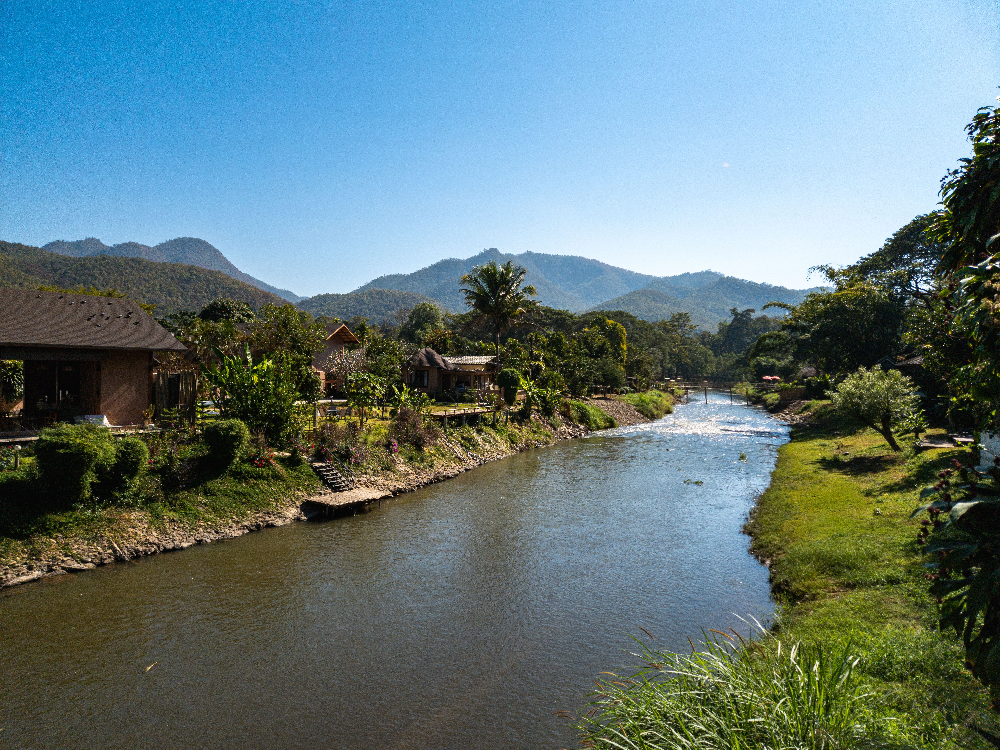
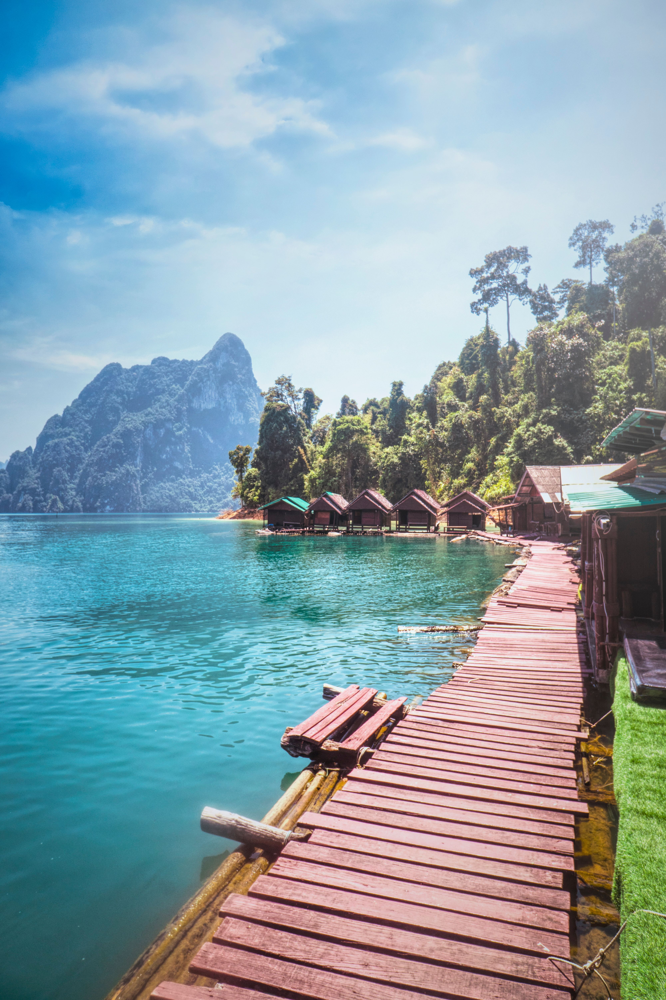
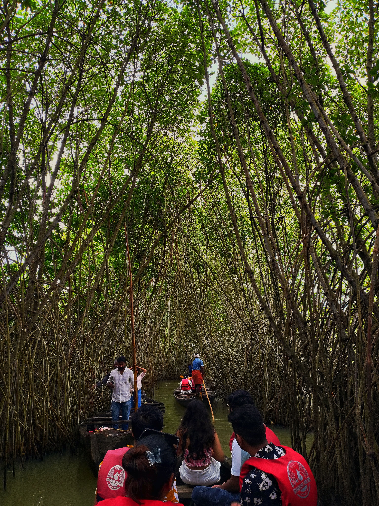
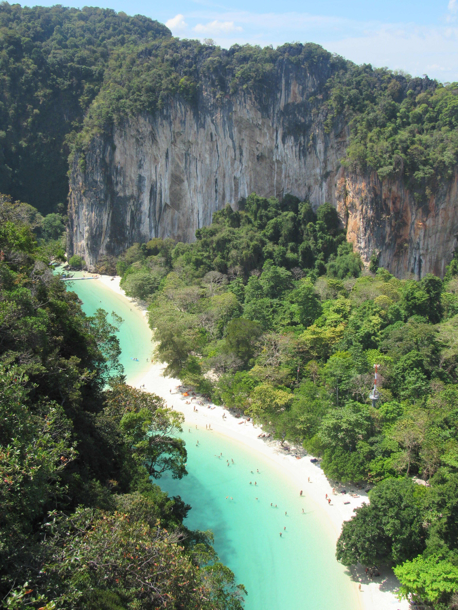
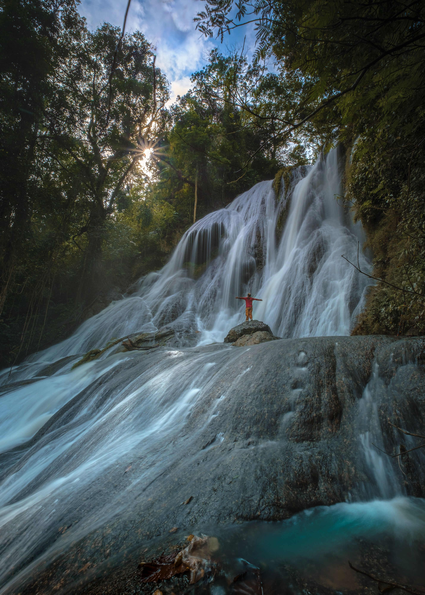
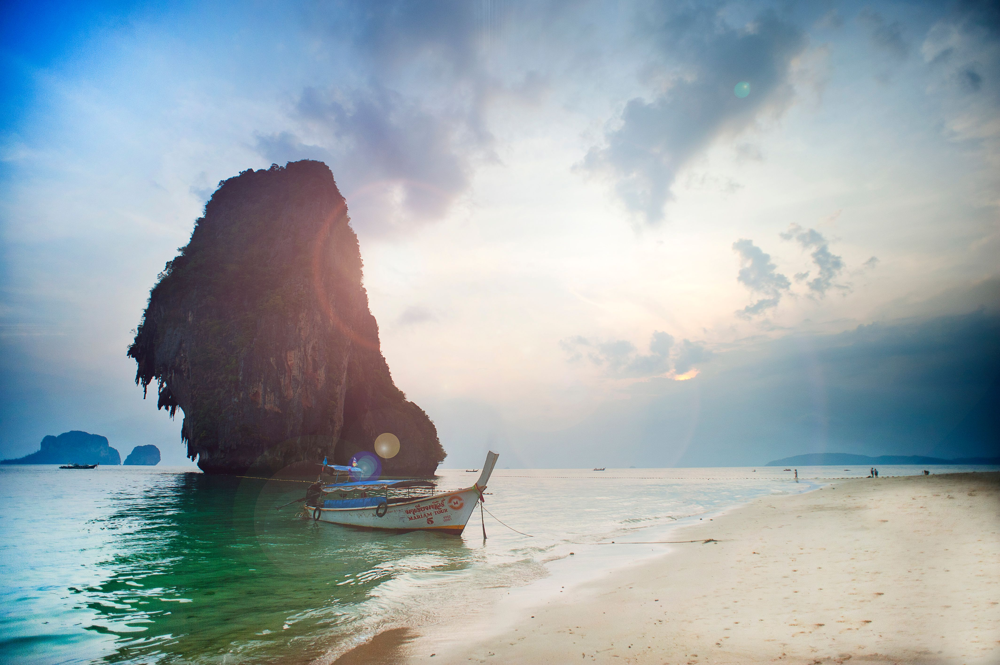

Giorni 1–3
Bangkok e Ayutthaya
Templi sul Chao Phraya, mercati serali e antiche rovine. Ayutthaya si visita in giornata, senza cambiare alloggio.
Tre anime, un solo viaggio: la Bangkok dei templi, il nord dei villaggi e una notte galleggiante tra le montagne di Khao Sok.
Per chi sogna la sua prima Thailandia senza scegliere tra templi, tradizioni e mare. L’itinerario alterna luoghi iconici e deviazioni dal ritmo più lento, con giornate libere dove servono.
Bangkok → Ayutthaya → Chiang Mai → Mae Kampong → Khao Sok → Krabi → Bangkok
Queste sono le tappe più importanti del percorso. Le giornate, gli orari e le attività precise vengono adattati alle date del viaggio.

Templi sul Chao Phraya, mercati serali e antiche rovine. Ayutthaya si visita in giornata, senza cambiare alloggio.

Cultura Lanna, un laboratorio di cucina, il tempio di Doi Suthep e le particolari cascate di Bua Tong.

Piccole case di legno, tè, caffè e il suono del ruscello: una notte a contatto con il villaggio.

Un trasferimento ragionato verso Khao Sok, una passeggiata naturalistica e la notte sul lago Cheow Lan.

Railay, Ao Thalane e le isole Hong, con margine per il mare e per il meteo.

Ultima notte a Bangkok prima del viaggio internazionale: una scelta pratica per evitare coincidenze rischiose.


Il periodo e le condizioni locali contano quanto la scelta delle tappe. Organizzando tutto su date reali possiamo anche creare una versione più essenziale o più confortevole.
Testi informativi, non una conferma di disponibilità. Trasporti, accessi ai parchi, orari, guide e condizioni meteo possono cambiare.
Possiamo partire da questo percorso oppure cambiarne ritmo, tappe e budget. Il bello di Fuori Mappa è proprio costruire un viaggio che ti somigli.